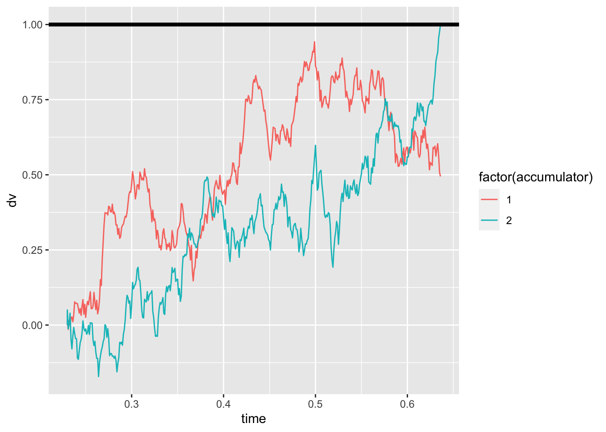
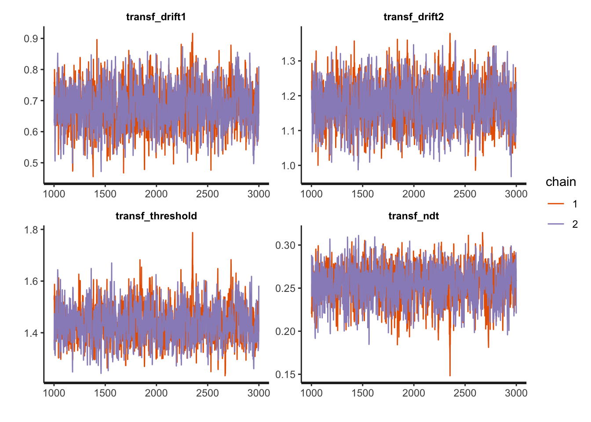
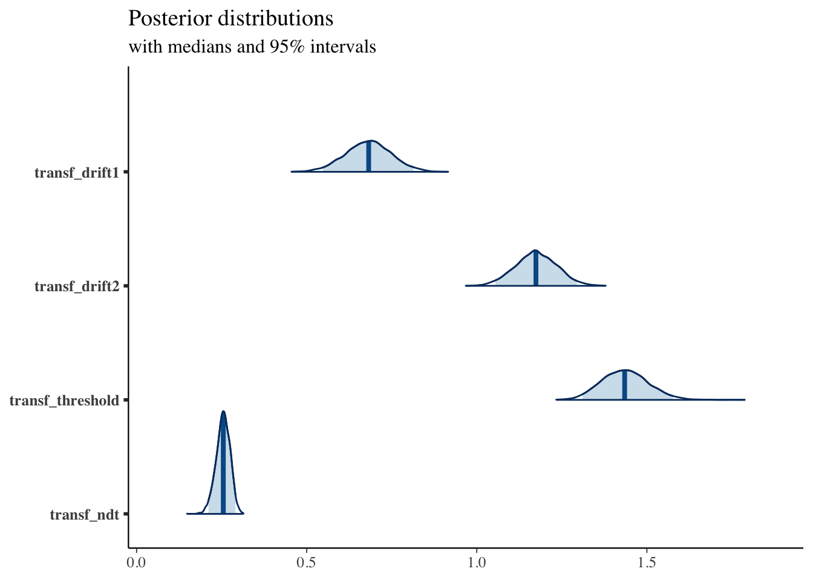

rm(list = ls())
library(tidyverse)
library(dfoptim)
library(rtdists)
library(rstan)
library(bayesplot)
source('rwald code.r') # from https://osf.io/3sp9t/We can write down Equation 1 of the Tillman paper to simulate the process described by the race diffusion model:
rdm_path <- function(drift1, drift2, threshold, ndt, sp1=0, sp2=0, noise_constant=1, dt=0.001, max_rt=10) {
max_tsteps <- max_rt/dt
# initialize the diffusion process
tstep <- 0
x1 <- c(sp1*threshold) # vector of accumulated evidence at t=tstep
x2 <- c(sp2*threshold) # vector of accumulated evidence at t=tstep
time <- c(ndt)
# start accumulating
while (x1[tstep+1] < threshold & x2[tstep+1] < threshold & tstep < max_tsteps) {
x1 <- c(x1, x1[tstep+1] + rnorm(mean=drift1*dt, sd=noise_constant*sqrt(dt), n=1))
x2 <- c(x2, x2[tstep+1] + rnorm(mean=drift2*dt, sd=noise_constant*sqrt(dt), n=1))
time <- c(time, dt*tstep + ndt)
tstep <- tstep + 1
}
return (data.frame(time=rep(time, 2), dv=c(x1, x2), accumulator=c(rep(1, length(x1)), rep(2, length(x2)))))
}And visualize it:
gen_drift1 = 1.7
gen_drift2 = 2
gen_threshold = 1
gen_ndt = .23
sim_path <- rdm_path(gen_drift1, gen_drift2, gen_threshold, gen_ndt)
ggplot(data = sim_path, aes(x = time, y = dv, color=factor(accumulator)))+
geom_line(size = .5) +
geom_hline(yintercept=gen_threshold, size=1.5)
To have a look at the whole distribution, though, we want to simulate more trials:
random_rdm <- function(n_trials, drift1, drift2, threshold, ndt, sp1=0, sp2=0, noise_constant=1, dt=0.001, max_rt=10) {
choice <- rep(NA, n_trials)
rt <- rep(NA, n_trials)
max_tsteps <- max_rt/dt
# initialize the diffusion process
tstep <- 0
x1 <- rep(sp1*threshold, n_trials) # vector of accumulated evidence at t=tstep
x2 <- rep(sp2*threshold, n_trials) # vector of accumulated evidence at t=tstep
ongoing <- rep(TRUE, n_trials) # have the accumulators reached the bound?
# start accumulating
while (sum(ongoing) > 0 & tstep < max_tsteps) {
x1[ongoing] <- x1[ongoing] + rnorm(mean=drift1*dt, sd=noise_constant*sqrt(dt), n=sum(ongoing))
x2[ongoing] <- x2[ongoing] + rnorm(mean=drift2*dt, sd=noise_constant*sqrt(dt), n=sum(ongoing))
tstep <- tstep + 1
# ended trials
ended1 <- (x1 >= threshold)
ended2 <- (x2 >= threshold)
# store results and filter out ended trials
if(sum(ended1) > 0) {
choice[ended1 & ongoing] <- 1
rt[ended1 & ongoing] <- dt*tstep + ndt
ongoing[ended1] <- FALSE
}
if(sum(ended2) > 0) {
choice[ended2 & ongoing] <- 2
rt[ended2 & ongoing] <- dt*tstep + ndt
ongoing[ended2] <- FALSE
}
}
return (data.frame(trial=seq(1, n_trials), choice=choice, rt=rt))
}And have a look at the average performance and shape of the RT distributions:
sim_data <- random_rdm(n_trials=1000, drift1=.7, drift2=1.2, threshold=1.5, ndt=.23)
summary(sim_data)## trial choice rt
## Min. : 1.0 Min. :1.000 Min. :0.3800
## 1st Qu.: 250.8 1st Qu.:1.000 1st Qu.:0.7408
## Median : 500.5 Median :2.000 Median :1.0025
## Mean : 500.5 Mean :1.618 Mean :1.1615
## 3rd Qu.: 750.2 3rd Qu.:2.000 3rd Qu.:1.4160
## Max. :1000.0 Max. :2.000 Max. :4.9470ggplot(data = sim_data, mapping = aes(x = rt, fill = factor(choice))) +
geom_histogram(binwidth=.05, alpha = .3, position="identity")The same results can be obtained with the R code attached to the original paper, which can be downloaded and loaded in R:
sim_data <- rWaldRace(n=1000, v=c(.7, 1.2), B=1.5, A=0, t0=.23, gf = 0)
summary(sim_data)## RT R
## Min. :0.3913 Min. :1.000
## 1st Qu.:0.7311 1st Qu.:1.000
## Median :1.0217 Median :2.000
## Mean :1.1441 Mean :1.654
## 3rd Qu.:1.3662 3rd Qu.:2.000
## Max. :4.4440 Max. :2.000In the same file, we can also find the likelihood function.
log_likelihood_rdm <- function(par, data, ll_threshold=1e-10) {
# par order: drift1, drift2, threshold, ndt
density <- rep(NA, dim(data)[1])
data$RT <- (data$RT - par[4]) # shift the distribution by the NDT
# dWald: density for single accumulator
# pWald: cumulative density for single accumulator
density[data$R==1] <- dWald(data$RT[data$R==1], v=par[1], B=par[3], A=0)*(1 - pWald(data$RT[data$R==1], v=par[2], B=par[3], A=0))
density[data$R==2] <- dWald(data$RT[data$R==2], v=par[2], B=par[3], A=0)*(1 - pWald(data$RT[data$R==2], v=par[1], B=par[3], A=0))
density[density <= ll_threshold] = ll_threshold # put a threhsold on very low likelihoods for computability
return(sum(log(density)))
}
starting_values = c(1, 1, 1, .1) # set some starting values
print(log_likelihood_rdm(starting_values, data=sim_data))## [1] -2037.574fit1 <- nmkb(par = starting_values,
fn = function (x) log_likelihood_rdm(x, data=sim_data),
lower = c(0, 0, 0, 0),
upper = c(10, 10, 10, 5),
control = list(maximize = TRUE))
print(fit1$par) # print estimated parameters## [1] 0.6763944 1.2100222 1.4631228 0.2455185We can also recover the generating parameters of the simulated data with stan, to assess th model’s identifialbility.
First, we need to prepare our data for stan:
sim_data_for_stan = list(
N = dim(sim_data)[1],
choices = sim_data$R,
rt = sim_data$RT
)And then we can fit the model:
fit1 <- stan(
file = "stan_models/RDM.stan", # Stan program
data = sim_data_for_stan, # named list of data
chains = 2, # number of Markov chains
warmup = 1000, # number of warmup iterations per chain
iter = 3000, # total number of iterations per chain
cores = 2 # number of cores (could use one per chain)
)## Running /Library/Frameworks/R.framework/Resources/bin/R CMD SHLIB foo.c
## clang -mmacosx-version-min=10.13 -I"/Library/Frameworks/R.framework/Resources/include" -DNDEBUG -I"/Library/Frameworks/R.framework/Versions/4.0/Resources/library/Rcpp/include/" -I"/Library/Frameworks/R.framework/Versions/4.0/Resources/library/RcppEigen/include/" -I"/Library/Frameworks/R.framework/Versions/4.0/Resources/library/RcppEigen/include/unsupported" -I"/Library/Frameworks/R.framework/Versions/4.0/Resources/library/BH/include" -I"/Library/Frameworks/R.framework/Versions/4.0/Resources/library/StanHeaders/include/src/" -I"/Library/Frameworks/R.framework/Versions/4.0/Resources/library/StanHeaders/include/" -I"/Library/Frameworks/R.framework/Versions/4.0/Resources/library/RcppParallel/include/" -I"/Library/Frameworks/R.framework/Versions/4.0/Resources/library/rstan/include" -DEIGEN_NO_DEBUG -DBOOST_DISABLE_ASSERTS -DBOOST_PENDING_INTEGER_LOG2_HPP -DSTAN_THREADS -DBOOST_NO_AUTO_PTR -include '/Library/Frameworks/R.framework/Versions/4.0/Resources/library/StanHeaders/include/stan/math/prim/mat/fun/Eigen.hpp' -D_REENTRANT -DRCPP_PARALLEL_USE_TBB=1 -I/usr/local/include -fPIC -Wall -g -O2 -c foo.c -o foo.o
## In file included from <built-in>:1:
## In file included from /Library/Frameworks/R.framework/Versions/4.0/Resources/library/StanHeaders/include/stan/math/prim/mat/fun/Eigen.hpp:13:
## In file included from /Library/Frameworks/R.framework/Versions/4.0/Resources/library/RcppEigen/include/Eigen/Dense:1:
## In file included from /Library/Frameworks/R.framework/Versions/4.0/Resources/library/RcppEigen/include/Eigen/Core:88:
## /Library/Frameworks/R.framework/Versions/4.0/Resources/library/RcppEigen/include/Eigen/src/Core/util/Macros.h:613:1: error: unknown type name 'namespace'
## namespace Eigen {
## ^
## /Library/Frameworks/R.framework/Versions/4.0/Resources/library/RcppEigen/include/Eigen/src/Core/util/Macros.h:613:16: error: expected ';' after top level declarator
## namespace Eigen {
## ^
## ;
## In file included from <built-in>:1:
## In file included from /Library/Frameworks/R.framework/Versions/4.0/Resources/library/StanHeaders/include/stan/math/prim/mat/fun/Eigen.hpp:13:
## In file included from /Library/Frameworks/R.framework/Versions/4.0/Resources/library/RcppEigen/include/Eigen/Dense:1:
## /Library/Frameworks/R.framework/Versions/4.0/Resources/library/RcppEigen/include/Eigen/Core:96:10: fatal error: 'complex' file not found
## #include <complex>
## ^~~~~~~~~
## 3 errors generated.
## make: *** [foo.o] Error 1Compare the generating parameters with the recovered ones and check for convergence looking at the Rhat measures:
print(fit1, pars = c("transf_drift1", "transf_drift2", "transf_threshold", "transf_ndt"))## Inference for Stan model: RDM.
## 2 chains, each with iter=3000; warmup=1000; thin=1;
## post-warmup draws per chain=2000, total post-warmup draws=4000.
##
## mean se_mean sd 2.5% 25% 50% 75% 97.5% n_eff Rhat
## transf_drift1 0.68 0 0.07 0.55 0.63 0.68 0.72 0.82 1091 1
## transf_drift2 1.21 0 0.06 1.09 1.17 1.21 1.26 1.34 1151 1
## transf_threshold 1.47 0 0.08 1.34 1.42 1.47 1.52 1.64 930 1
## transf_ndt 0.24 0 0.02 0.19 0.23 0.24 0.26 0.28 1008 1
##
## Samples were drawn using NUTS(diag_e) at Wed Sep 8 13:23:50 2021.
## For each parameter, n_eff is a crude measure of effective sample size,
## and Rhat is the potential scale reduction factor on split chains (at
## convergence, Rhat=1).And (visually) assess the model’s convergence as well as some more sampling diagnostics:
traceplot(fit1, pars = c("transf_drift1", "transf_drift2", "transf_threshold", "transf_ndt"), inc_warmup = FALSE, nrow = 2)
sampler_params <- get_sampler_params(fit1, inc_warmup = TRUE)
summary(do.call(rbind, sampler_params), digits = 2)## accept_stat__ stepsize__ treedepth__ n_leapfrog__ divergent__
## Min. :0.00 Min. : 0.0045 Min. :0.0 Min. : 1 Min. :0.0000
## 1st Qu.:0.86 1st Qu.: 0.2206 1st Qu.:3.0 1st Qu.: 7 1st Qu.:0.0000
## Median :0.96 Median : 0.2299 Median :3.0 Median : 15 Median :0.0000
## Mean :0.88 Mean : 0.2363 Mean :3.2 Mean : 13 Mean :0.0063
## 3rd Qu.:0.99 3rd Qu.: 0.2299 3rd Qu.:4.0 3rd Qu.: 15 3rd Qu.:0.0000
## Max. :1.00 Max. :14.3855 Max. :7.0 Max. :143 Max. :1.0000
## energy__
## Min. : 1254
## 1st Qu.: 1256
## Median : 1258
## Mean : 1263
## 3rd Qu.: 1259
## Max. :13831More plotting:
posterior <- as.matrix(fit1)
plot_title <- ggtitle("Posterior distributions",
"with medians and 95% intervals")
mcmc_areas(posterior,
pars = c("transf_drift1", "transf_drift2", "transf_threshold", "transf_ndt"),
prob = 0.95) + plot_title